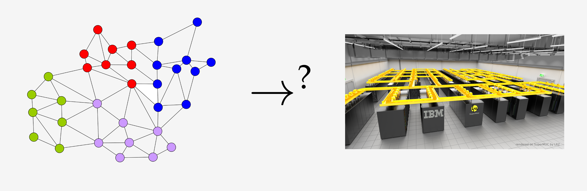

Overview
Communication and topology aware process mapping is a powerful approach to reduce communication time in parallel applications with known communication patterns on large, distributed memory systems. We address the problem as a quadratic assignment problem (QAP), and provide algorithms to construct initial mappings of processes to processors as well as fast local search algorithms to further improve the mappings. By exploiting assumptions that typically hold for applications and modern supercomputer systems such as sparse communication patterns and hierarchically organized communication systems, we arrive at significantly more powerful algorithms for these special QAPs. Our multilevel construction algorithms employ recently developed, perfectly balanced graph partitioning techniques and excessively exploit the given communication system hierarchy.
VieM - Vienna Mapping and Sparse Quadratic Assignment -- is a family of mapping programs. It includes serveral heuristics to map a task graphs onto a specified processor graph. We provide them here as easy to use open source software.
News:
22nd May 2020: We switched to CMake as a build system and MIT as a licence.
19th May 2020: We published a new TR on ``Efficient Process-to-Node Mapping Algorithms for Stencil Computations'' available here (work mainly done by Konrad von Kirchbach).
20th March 2020: ``High-Quality Hierarchical Process Mapping'' got accepted at SEA 2020.
27nd January 2020: We published a new TR on ``Load-Balanced Bottleneck Objectives in Process Mapping'' available here (which got accepted at CSC'20).
22nd January 2020: We published a new TR on ``High-Quality Hierarchical Process Mapping'' available here (work mainly done by Marcelo Fonseca Faraj).
1st April 2019: Marcelo Fonseca Faraj joined our team.
1st December 2019: Konrad von Kirchbach joined our team.
1st November 2019: Markus Lehr joined our team.
1st April 2019: Marcelo Fonseca Faraj joint our team.
16th October 2018: We got our FWF proposal ``Algorithm Engineering for Process Mapping'' funded.
21st June 2017: We presented our paper "Better Process Mapping and Sparse Quadratic Assignment" at SEA 2017.
16th March 2017: Released VieM v1.00.
14th February 2017: Published ArXiv Report. Link to PDF.
Licence
The program is licenced under MIT.If you publish results using our algorithms, please acknowledge our work by quoting the following paper (PDF):
@article{DBLP:journals/corr/SchulzT17a,
author = {Marcelo Fonseca Faraj and
Konrad von Kirchbach and
Markus Lehr and
Christian Schulz and
Jesper Larsson Tr{\"{a}}ff},
title = {VieM v1.00 - Vienna Mapping and Sparse Quadratic Assignment User Guide},
journal = {CoRR},
volume = {abs/1703.05509},
year = {2017},
url = {http://arxiv.org/abs/1703.05509},
archivePrefix = {arXiv},
eprint = {1703.05509},
timestamp = {Mon, 13 Aug 2018 16:46:15 +0200},
biburl = {https://dblp.org/rec/journals/corr/SchulzT17a.bib},
bibsource = {dblp computer science bibliography, https://dblp.org}
}
If you use one-to-one mapping algorithms, please also cite the following:
@inproceedings{DBLP:conf/wea/SchulzT17,
author = {Christian Schulz and
Jesper Larsson Tr{\"{a}}ff},
title = {Better Process Mapping and Sparse Quadratic Assignment},
booktitle = {16th International Symposium on Experimental Algorithms, {SEA}},
pages = {4:1--4:15},
year = {2017},
series = {LIPIcs},
volume = {75},
publisher = {Schloss Dagstuhl - Leibniz-Zentrum f{\"{u}}r Informatik},
crossref = {DBLP:conf/wea/2017},
url = {https://doi.org/10.4230/LIPIcs.SEA.2017.4},
doi = {10.4230/LIPIcs.SEA.2017.4},
timestamp = {Tue, 11 Feb 2020 15:52:14 +0100},
biburl = {https://dblp.org/rec/conf/wea/SchulzT17.bib},
bibsource = {dblp computer science bibliography, https://dblp.org}
}
Our project currently obtained the following publications: - Sasha Hunold, Konrad von Kirchbach, Markus Lehr, Christian Schulz and Jesper Larsson Träff. Efficient Process-to-Node Mapping Algorithms for Stencil Computations. Download PDF.
- Marcelo Fonseca Faraj, Alexander van der Grinten, Henning Meyerhenke, Jesper Larsson Träff and Christian Schulz. High-Quality Hierarchical Process Mapping. Download PDF.
- Konrad von Kirchbach, Christian Schulz and Jesper Larsson Träff. Better Process Mapping and Sparse Quadratic Assignment. Extended version, now with global multisection. Download PDF.
- Johannes Langguth, Sebastian Schlag, and Christian Schulz. Load-Balanced Bottleneck Objectives in Process Mapping. Accepted at CSC'20. Download PDF.
- Konrad von Kirchbach, Christian Schulz and Jesper Larsson Träff. Better Process Mapping and Sparse Quadratic Assignment. Extended version, now with global multisection. Download PDF.
- Christian Schulz and Jesper Larsson Träff. Better Process Mapping and Sparse Quadratic Assignment. Proceedings of the 16th International Symposium on Experimental Algorithms (SEA'17). 2017. Download PDF.
Download
- VieM_1.00.tar.gz (or available on GitHub here)
- User Guide to VieM v1.00

Support
- Write us an email if you need support!
- We are glad for any comments and error reports (or even bug fixes or feature requests) that you send us.